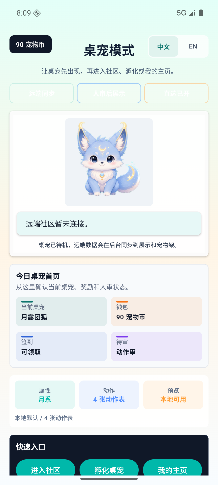
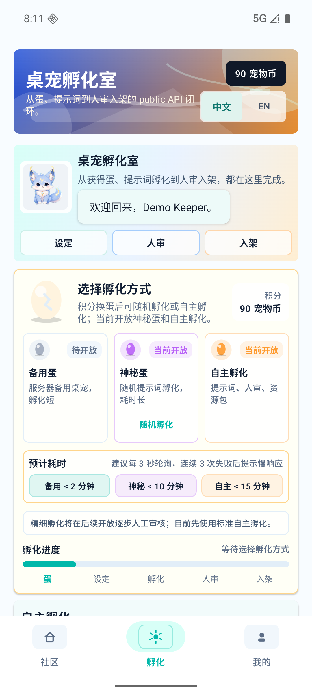
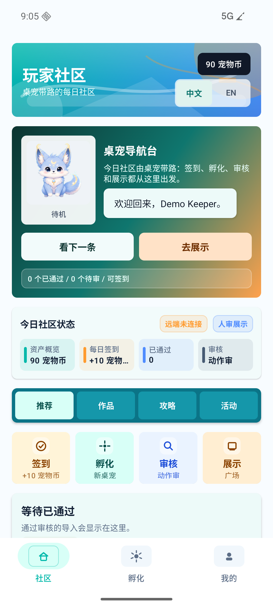
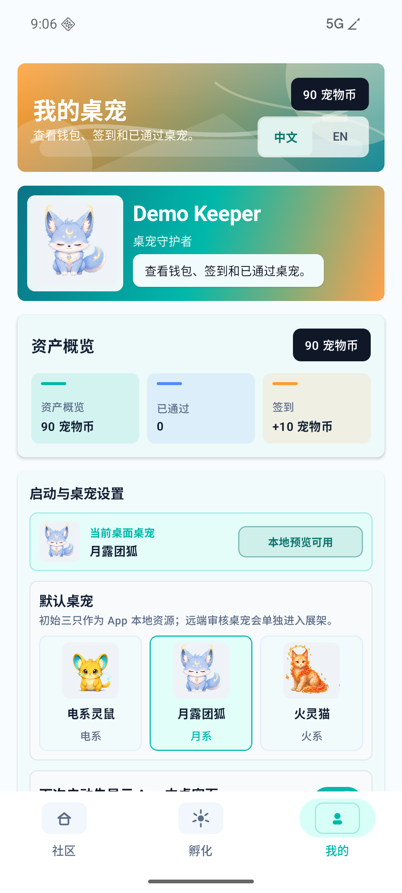

桌宠首页
展示本地桌宠、动作表、远端同步状态、宠物币与签到状态。
Gamer Pet App
当前版本聚焦 Android 桌宠、孵化入口、社区展示、人审路径和个人页宠物架。 这里展示的是已截取的真实模拟器画面；公开 APK 需要完成构建、签名和审核后再开放。

App Surface
展示本地桌宠、动作表、远端同步状态、宠物币与签到状态。
把文本描述、候选预览、等待人审和下载门禁组织到一条 App 路径里。
社区页围绕推荐、频道、展示架和动态流，承接通过审核的桌宠。
个人页呈现账户状态、宠物架、创作记录和下一步操作入口。
Verified Screens
以下截图来自当前 Android E2E 记录，用来说明页面结构和阶段状态。



Download Gate
当前页面不提供 APK 文件，也不放置占位下载链接。公开下载需要完成可复现构建、 签名策略、版本说明、基础回归和人工确认后再开启。